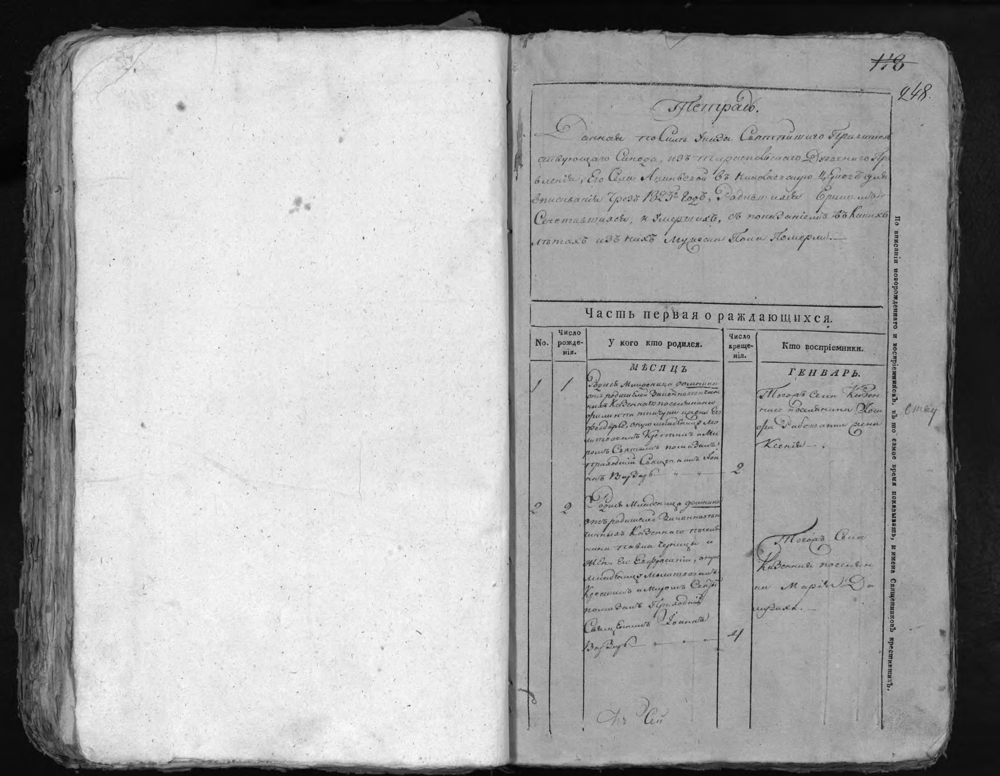
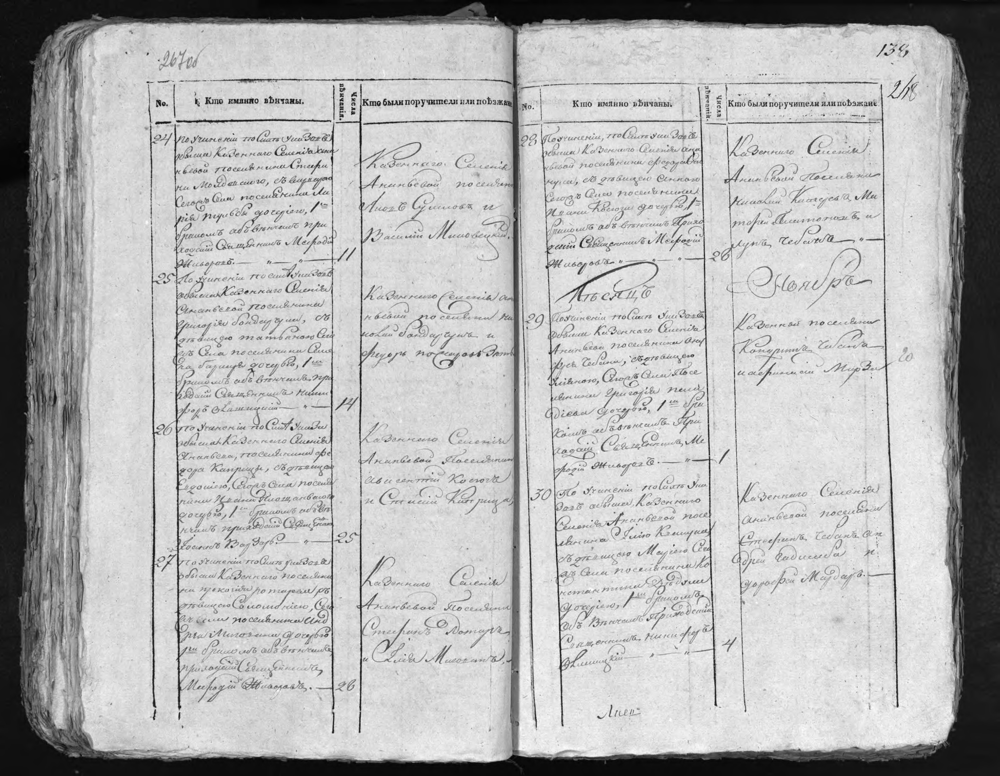
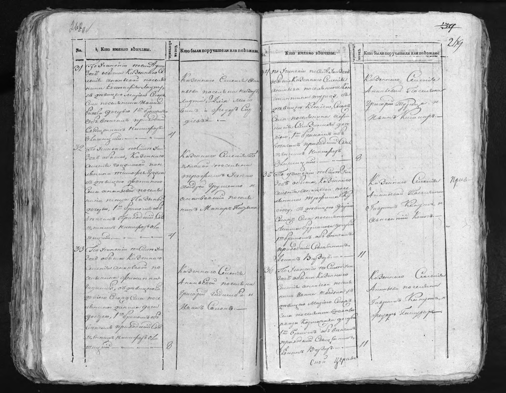
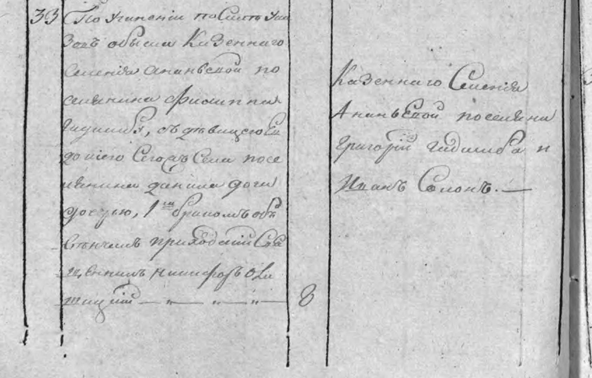
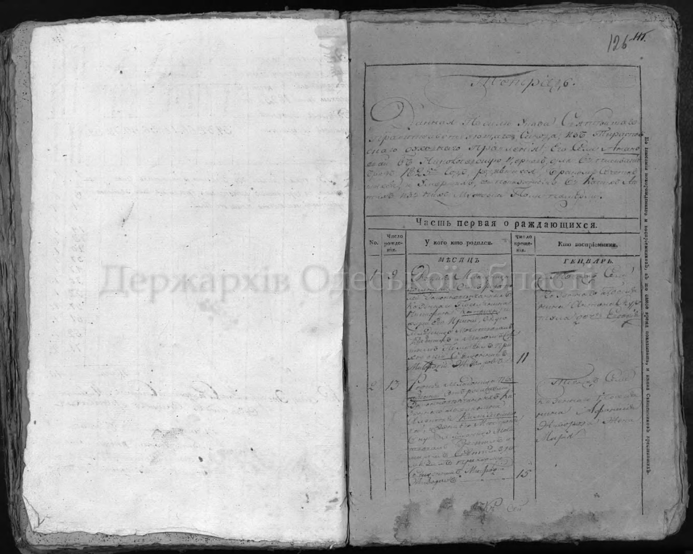
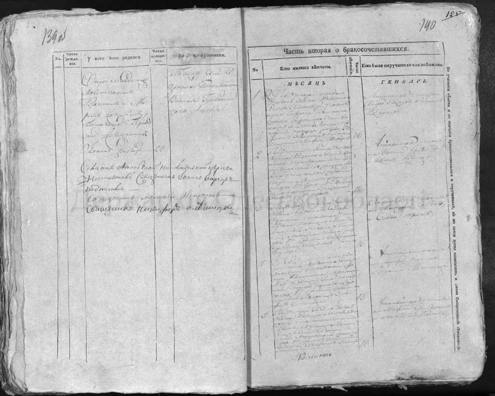
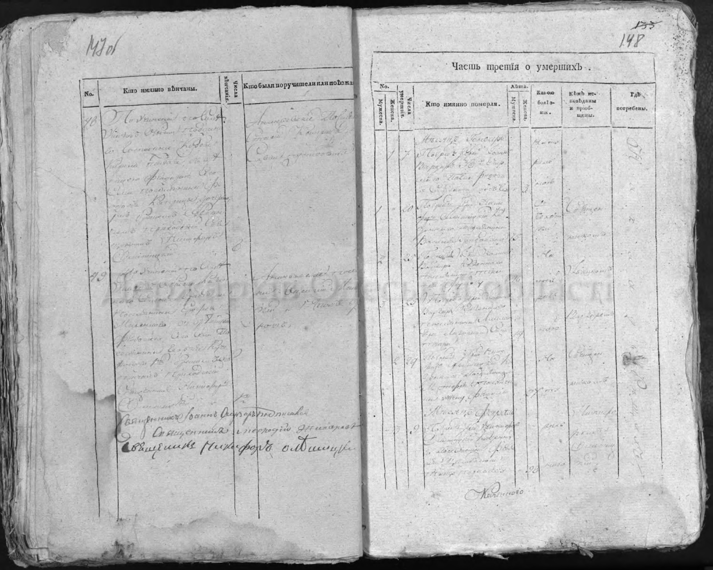
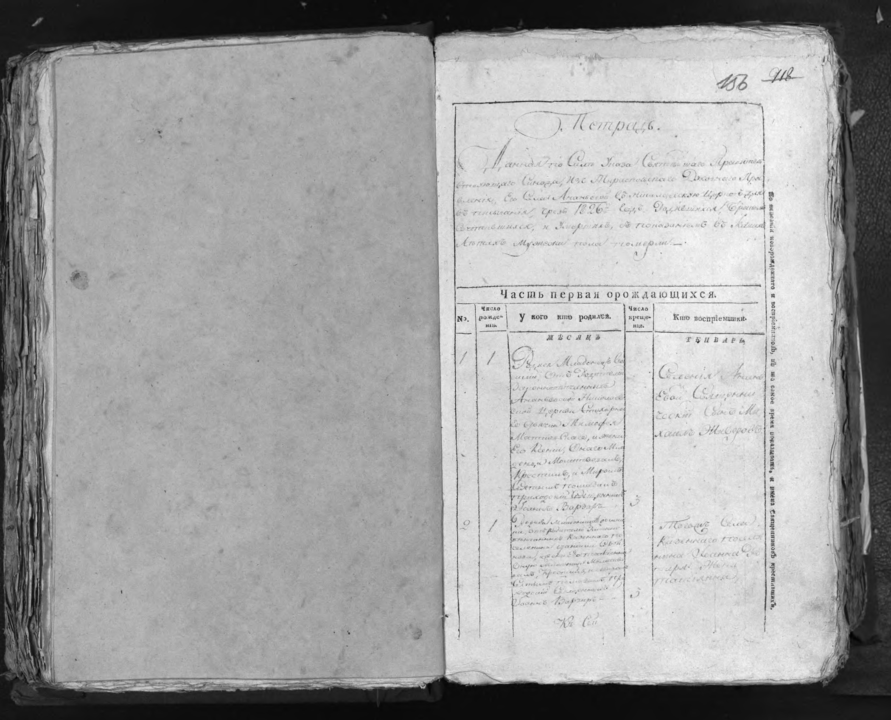
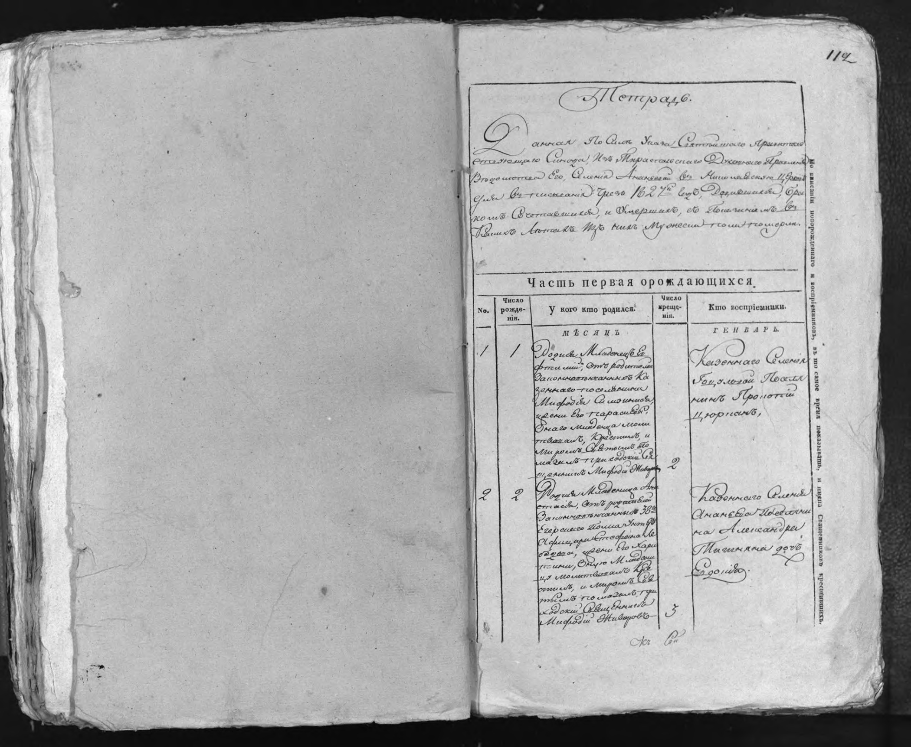
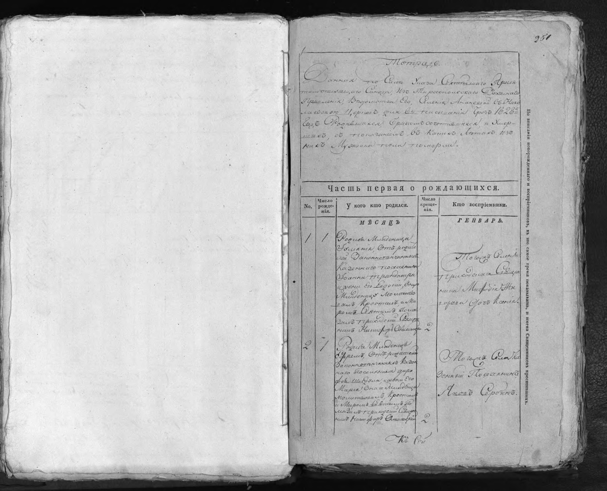

Євдокія, дочка Данила Доги: вінчання в Ананьєві 1823 року
Знайдено новий запис про місцеву сім’ю Дог. 8 листопада 1823 ст.ст. / 20 листопада н.ст. Євдокія, дочка Данила Доги, вінчалася з Флорентієм у Миколаївській церкві Ананьєва. Прізвище нареченого ще не розібране надійно.
Зв’язок із вашим родоводом не доведений. У записі немає по батькові Данила та імені матері Євдокії. Данила не ототожнено з батьком Параскеви 1831 року; нових родинних зв’язків у дерево не додано.
Джерело: ДАОО 37/3/269, арк. 268 зв., № 33; офіційний DjVu, зображення 250, ліворуч унизу. Заголовок року й парафії — зображення 229, місяць «Ноябрь» — попередній розворот 249.
«…с девицею Евдокиею, сего ж села поселянина Данила Доги дочерью, 1-м браком обвенчал…»
Наречений і батько нареченої названі поселянами Ананьєва. Це відомості про проживання; місця народження та вік тут не зазначені. Уривок наведено з нормалізованою орфографією.
Повний звіт для Claude — TXT · Журнал — JSON · Попередній запис Дог 1831 року




Пошук шлюбу Доги з Меланією: 1823–1831
Шуканої пари [Дани/Даны?] Стефанович Дога × Меланія Матвіївна не встановлено. Усі наведені розділи пройдені візуально за потрібними іменами; це не повне розшифрування всіх записів. 1825 рік не можна вважати надійно виключеним через сильне вицвітання.
| Рік | Справа | Зображення DjVu | Аркуші | № записів | Обмеження |
|---|---|---|---|---|---|
| 1823 | 37/3/269 | 245 праворуч–251 ліворуч | 264–269 зв. | 1–37 | |
| 1824 | 37/3/281 | 109 праворуч–115 ліворуч | 106–111 зв. | 1–26 | |
| 1825 | 37/3/95 | 139 праворуч–147 ліворуч | 140–147 зв. | 1–49 | Сильно вицвіло; багато імен не розібрано. Рік не виключений. |
| 1826 | 37/3/312 | 187 праворуч–195 ліворуч | 180–187 зв. | 1–51 | Є вицвілі місця; № 13 не підтверджений як Дога. |
| 1827 | 37/3/320 | 124 праворуч–130 ліворуч | 128–133 зв. | 1–42 | |
| 1828 | 37/3/341 | 263 праворуч–269 ліворуч | 269–274 зв. | 1–34 | |
| 1829 | 37/3/364 | 175 праворуч–185 ліворуч | 181–190 зв. | 1–43 | Є вицвілі місця, зокрема № 22. |
| 1830 | 37/3/376 | 121 праворуч–131 ліворуч | 117–126 зв. | 1–40 | |
| 1831 | 37/3/390 | 162 праворуч–176 ліворуч | 169–182 зв. | 1–56 |
Також переглянуто народження 1828 року, 37/3/341, DjVu 245 праворуч — 263 ліворуч, № 1–146. Підтвердженого збігу з Догою та Меланією або Лукою, сином Кондрата Рублі, не встановлено.
Наступні перевірки
Діти Флорентія та Євдокії після 1823 року можуть уточнити прізвище чоловіка. Для попередньої пари Дога × Меланія залишаються раніші шлюби та краща копія 1825 року. Ототожнення двох батьків Дог потребує окремих доказів.
Повний дослідницький звіт і невпевнені читання
АНАНЬЇВ 1823–1831: НОВА ЗГАДКА ДОГ І ЖУРНАЛ ПОШУКУ ШЛЮБУ Перевірено 18.11.2026. База GitHub: 3ef3f2fbe7c51efe9e46ac531cf74ed14f3e5693. РЕЗУЛЬТАТ Знайдено шлюб Євдокії, дочки Данила Доги, 8 / 20 листопада 1823 року в Ананьєві. Це новий документ про місцевих носіїв прізвища; спорідненість із Тетяною Догою та вашим доведеним деревом ще не встановлена. На оновленому origin/main запис не виявлено пошуком по текстових файлах. Неопубліковані нотатки Claude ця перевірка не охоплює. Шуканого шлюбу [Дани/Даны?] Стефановича Доги з Меланією Матвіївною у візуальному перегляді шлюбних розділів 1823–1831 років не впізнано. Це не доказ відсутності запису: деякі сторінки вицвіли, а за 1825 рік багато імен лишилися нерозібраними. НОВИЙ ЗАПИС: ЄВДОКІЯ, ДОЧКА ДАНИЛА ДОГИ ДАОО, ф. 37, оп. 3, спр. 269, Миколаївська церква Ананьєва, 1823 рік, арк. 268 зв., шлюб № 33. Офіційний DjVu, зображення 250, ліворуч унизу. Дата вінчання: 08.11.1823 ст.ст. / 20.11.1823 н.ст. Різниця календарів — 12 днів. Місяць «Ноябрь» починається перед № 29 на попередньому розвороті DjVu 249; заголовок року і парафії — DjVu 229, арк. 248. Наречена: дівиця Євдокія, дочка Данила Доги. Батько — поселянин «сего села», тобто Ананьєва. По батькові батька та ім'я матері не вказані. Слово «данила» прочитано в збільшенні; не підмінено іменем із запису 1831 року. Наречений: Флорентій, поселянин казенного селища Ананьєва. Його прізвище не розібране достатньо надійно, тому не нормалізоване й не додане до дерева. У записі зазначено «1-м браком». Віку наречених, дат і місць їхнього народження, смерті та тривалості життя цей запис не дає. Проживання в Ананьєві не означає народження в Ананьєві. Уривок із нормалізованою орфографією: «…с девицею Евдокиею, сего ж села поселянина Данила Доги дочерью, 1-м браком обвенчал…». Це часткова транскрипція, не повне відтворення документа. Оригінал: https://archive.od.gov.ua/wp-content/old-files/EL_ARH/M/0037/0037_03/0201-0300/0037_03_0269_DAOO.djvu ЯК ЦЕ СПІВВІДНОСИТЬСЯ З ПОПЕРЕДНЬОЮ ЗАЧІПКОЮ У 1831 році знайдена Параскева, дочка [Дани/Даны?] Стефановича Доги та Меланії Матвіївни. Ім'я того батька ще не прочитане остаточно. Данило з 1823 року може бути окремою людиною. Запис 1823 не називає ні Стефана, ні Меланію, тому не дозволяє ототожнити двох батьків або проголосити Євдокію сестрою Параскеви. Тетяна з вінчання 1824 року — дочка Стефана Доги. Її зв'язок із Данилом 1823 року не встановлений. Навіть ланка Кондрат Рубля × Тетяна Дога → Лука Кондратович Рубля залишається гіпотезою. Новий документ збережено як окремий дослідницький запис, без додавання родинних зв'язків у доведене дерево. Попередні матеріали: https://opachesnaya-creator.github.io/rodovid/research-ananyiv-1829-1831.html https://opachesnaya-creator.github.io/rodovid/research-gvoz-1824.html ТОЧНИЙ ОБСЯГ ПЕРЕГЛЯДУ ШЛЮБІВ Усі номери DjVu рахуються від 1; вони не є номерами кадрів FamilySearch. right — праворуч, left — ліворуч, v — зворот аркуша. Перегляд візуальний, за шуканими іменами; це не повна дипломатична транскрипція кожного запису. 1823: ДАОО 37/3/269; DjVu 245 right–251 left; арк. 264–269v; № 1–37. https://archive.od.gov.ua/wp-content/old-files/EL_ARH/M/0037/0037_03/0201-0300/0037_03_0269_DAOO.djvu 1824: ДАОО 37/3/281; DjVu 109 right–115 left; арк. 106–111v; № 1–26. https://archive.od.gov.ua/wp-content/old-files/EL_ARH/M/0037/0037_03/0201-0300/0037_03_0281_DAOO.djvu 1825: ДАОО 37/3/95; DjVu 139 right–147 left; арк. 140–147v; № 1–49. Сильно вицвіло; багато імен не розібрано. Рік не виключений. https://archive.od.gov.ua/wp-content/old-files/EL_ARH/M/0037/0037_03/0001-0100/0037_03_0095_DAOO.djvu 1826: ДАОО 37/3/312; DjVu 187 right–195 left; арк. 180–187v; № 1–51. Є вицвілі місця; № 13 не підтверджений як Дога. https://archive.od.gov.ua/wp-content/old-files/EL_ARH/M/0037/0037_03/0301-0400/0037_03_0312_DAOO.djvu 1827: ДАОО 37/3/320; DjVu 124 right–130 left; арк. 128–133v; № 1–42. https://archive.od.gov.ua/wp-content/old-files/EL_ARH/M/0037/0037_03/0301-0400/0037_03_0320_DAOO.djvu 1828: ДАОО 37/3/341; DjVu 263 right–269 left; арк. 269–274v; № 1–34. https://archive.od.gov.ua/wp-content/old-files/EL_ARH/M/0037/0037_03/0301-0400/0037_03_0341_DAOO.djvu 1829: ДАОО 37/3/364; DjVu 175 right–185 left; арк. 181–190v; № 1–43. Є вицвілі місця, зокрема № 22. https://archive.od.gov.ua/wp-content/old-files/EL_ARH/M/0037/0037_03/0301-0400/0037_03_0364_DAOO.djvu 1830: ДАОО 37/3/376; DjVu 121 right–131 left; арк. 117–126v; № 1–40. https://archive.od.gov.ua/wp-content/old-files/EL_ARH/M/0037/0037_03/0301-0400/0037_03_0376_DAOO.djvu 1831: ДАОО 37/3/390; DjVu 162 right–176 left; арк. 169–182v; № 1–56. https://archive.od.gov.ua/wp-content/old-files/EL_ARH/M/0037/0037_03/0301-0400/0037_03_0390_DAOO.djvu ДОДАТКОВИЙ ПЕРЕГЛЯД НАРОДЖЕНЬ 1828, ДАОО 37/3/341: DjVu 245 праворуч — 263 ліворуч, арк. 251–268 зв., № 1–146. Підтвердженого збігу з парою Дога × Меланія або Лукою, сином Кондрата Рублі, не встановлено. Народження 1823–1827 у цьому проході суцільно не перевірялися; випадково побачені сторінки не зараховані як повний перегляд. СХОЖІ ЧИТАННЯ, ЯКІ НЕ МОЖНА ПЕРЕНОСИТИ В ДЕРЕВО 1826, шлюб № 13, DjVu 189: Стефан із Марією. Прізвище Стефана не підтверджене як Дога. Перший здогад відхилено як недостатньо надійний. 1824, шлюб № 3, DjVu 109: схоже прізвище батька нареченої, але не впевнено «Дога»; не включено як знахідку родини. 1828, народження № 69, DjVu 254: прізвище батька не розібране надійно; не включено як знахідку родини. 1830, смерть № 5, DjVu 132: син Федір у Василія Стратіли; це не підтверджений запис про Дог. НАСТУПНІ ПЕРЕВІРКИ ЗА ОНЛАЙН-ДОКУМЕНТАМИ 1. Діти Флорентія та Євдокії після шлюбу 1823 року: уточнити прізвище чоловіка й шукати повторні згадки Данила Доги. 2. Краща копія шлюбів Ананьєва 1825 року. Поточний блідий скан не дозволяє надійно виключити потрібну пару. 3. Раніші шлюби, зокрема Ананьїв 1821, ДАОО 37/3/240. Ця ділянка не переглянута в цьому проході. 4. Зіставити сім'ї Данила 1823 року та [Дани/Даны?] Стефановича 1831 року за кількома незалежними записами. Самого прізвища й місця недостатньо. ЗБЕРЕЖЕНІ СКАНИ research-doga-1823-title.jpg — 1823: заголовок книги, Ананьїв, Миколаївська церква. ДАОО 37/3/269, арк. 248, DjVu 229. research-doga-1823-november.jpg — 1823: попередній розворот із заголовком «Ноябрь» перед записом № 29. Далі листопад триває на наступному розвороті. research-doga-1823-marriage33-page.jpg — 1823: повний розворот. Шлюб № 33 — унизу ліворуч, арк. 268 зв., 8 листопада. Праворуч — арк. 269. research-doga-1823-marriage33-detail.png — Збільшення № 33: Євдокія, дочка Данила Доги. Кадрування збільшене вдвічі; нових деталей не домальовано. Прізвище Флорентія залишене непрочитаним. research-doga-1825-title.jpg — 1825: заголовок ананьївської книги у збірній справі 37/3/95, DjVu 125. research-doga-1825-marriages-start.jpg — 1825: початок шлюбів праворуч, арк. 140. Сильно вицвілий текст обмежує надійність пошуку. research-doga-1825-marriages-end.jpg — 1825: кінець шлюбів ліворуч, арк. 147 зв., № 49. Потрібна краща копія. research-doga-1826-title.jpg — 1826: заголовок Миколаївської парафії Ананьєва, ДАОО 37/3/312, арк. 156, DjVu 163. research-doga-1827-title.jpg — 1827: заголовок ананьївської книги, ДАОО 37/3/320, арк. 112, DjVu 108. research-doga-1828-title.jpg — 1828: заголовок ананьївської книги, ДАОО 37/3/341, арк. 251, DjVu 245.
Заголовки книг і приклад обмеження читабельності





